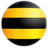

РезультатыResults
Где отвечал за результатWhere I owned the outcome
ВкусВилл
2025 — 2026
Руководитель направления гуманоидных роботов и AIHead of Robotics and AI
Запустил направление с нуля: стратегия, команда из 15 человек, поиск и приёмка гуманоидов в Китае.
Выстроил процессы разработки и сбора датасетов, автоматическую проверку моделей и аугментацию
данных. Сначала проверяем модели в симуляции, потом на живых роботах.
I launched the function from zero: strategy, a team of 15, and finding and accepting humanoids in China. I built the processes for development and dataset collection, automatic model checks, and data augmentation. We test models in simulation first, then on live robots.
Celly
2019 — 2025
Основатель и CTOFounder and CTO
Стартовал с идеи, собрал команду и вместе вывели на рынок AI-микроскоп для анализа крови: смартфон, компьютерное
зрение, облако и роботизированная система подачи стекол. Привлёк $500K, в том числе от Alchemist Accelerator в США. На
клинических испытаниях точность 97%. Внедрили автоматизированное решение в десятки лабораторий и снизили затраты
клиентов на микроскопию на 70%. Затем перевёл разработку на агентов в
Cursor и Claude: штат разработки сократился на 80%, софт стал выходить быстрее. Стек: AWS, Docker, Python, Django,
PostgreSQL, React, TensorFlow, Swift, OpenCV, механика и электроника.
I started from an idea, built the team, and together we shipped an AI microscope for blood analysis: a phone, computer vision, the cloud, and a robotic slide-feeding system. I raised $500K, including from Alchemist Accelerator in the US. Clinical trials reached 97% accuracy. We deployed the automated solution in dozens of labs and cut clients' microscopy costs by 70%. I then moved development onto agents in Cursor and Claude: the engineering staff shrank by 80%, and software started shipping faster. Stack: AWS, Docker, Python, Django, PostgreSQL, React, TensorFlow, Swift, OpenCV, mechanics and electronics.

БилайнBeeline
2011 — 2019
Разработчик -> Технический менеджерDeveloper → technical manager
Под управлением было 50 человек. Был связующим звеном между маркетингом, разработкой и подрядчиками: более 15 новых продуктов, вместе
свыше $10 млн в год выручки и доступность 99,9%. Технические задания, тендеры, мониторинг, работа при сбоях и
круглосуточная поддержка.
I managed a team of 50. I was the link between marketing, engineering, and vendors: more than 15 new products, together over $10M a year in revenue, and 99.9% availability. Specs, tenders, monitoring, handling outages, and round-the-clock support.